CD OzonoJazz EN VIVO
Hotel Humboldt, Caracas. San Antonio: ArteMus, C.A, 2021-22. (Octeto)
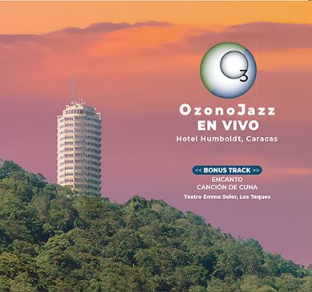
CD GUARAPICHE BLUES - Homenaje a María Rivas.
Ozono Jazz y su Joroponovo. San Antonio: ArteMus, C.A, 2020. (Cuarteto & último track septeto + María Rivas y coros)
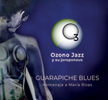
CD LABERINTO
Ozono Jazz en Dúo. San Antonio: ArteMus, C.A, 2017.

CD NATURA
Emilio Mendoza y Ozono Jazz. San Antonio: ArteMus, C.A, 2009 / 2da. ed. 2012. (Sexteto)

CD Venezuelademo 15
Emilio Mendoza y Ozono Jazz. Caracas: Minci, 2006.
Incluye el track con Círculos de Aves, una mezcla temprana de Espirales.
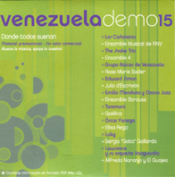
CD Venezuelademo 13
Akurima. Caracas: Minci, 2006.
Incluye el track Campanelas, que eventualmente pasó a ser Resplandor.
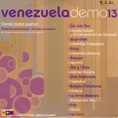
CD Bajo Un Cielo Toronjil
Akurima. San Antonio: Bys Music C.A., 2005.
Composición de 5 piezas. (Campanelas, Giros, Noche, Variaciones sobre Siempre, Sólo un Mes), Arreglos: Akurima.
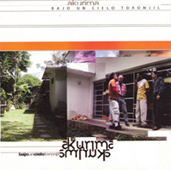
CD
25 Años - Antología de
Compositores de Venezuela I.
Caracas: SVMC, 2003.
Incluye la composición Velorio Ritual para clarinete bajo, violoncello, piano. Coordinación de EM de la producción para la Sociedad Venezolana de Música Contemporánea SVMC.
Incluye la composición Velorio Ritual para clarinete bajo, violoncello, piano. Coordinación de EM de la producción para la Sociedad Venezolana de Música Contemporánea SVMC.
.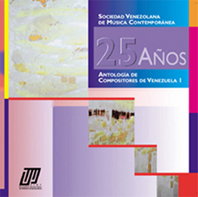
CD Mundos - Emilio Mendoza. Caracas: ArteMus, 1998.
Producción, composición, grabaciones de diferentes presentaciones.
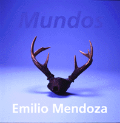
CD Grand Designs SCI CD Nº 9. Society of Composers Incorporated. NY: Capstone Records, 1997.
Incluye la composición Jungla/Rainforest para cinco percusionistas.
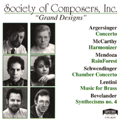
LP ODILA - Orquesta de Instrumentos Latinoamericanos. De lo Tradicional a lo Contemporáneo. Caracas: CCPYT-OAS 88005, 1986.
Ejecución de la ODILA-1983, director E. Mendoza. Incluye la composición Etnocidio, arreglo de Cale-Cale, canción recogida por el autor en Ghana, Africa Occidental, sept - dic. 1981.
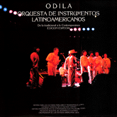
Cassette Grupo Kei Yumei. La Voz del Canto Latinoamericano. Caracas: KY-001, 1986.
Ejecución de la bandola llanera, cuatro, guitarra, seis, tiple, percusión, incluye la composición Marisela y la ejecución en vivo de un Seis por derecho en la bandola con acompañamiento.
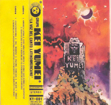
LP Tres Composiciones Instrumentales - Nueva Música Latinoamericana Nº 7. Montevideo: Edición Tacuabé (T/E 13), 1981.
Incluye la composición Sexteto para vientos: I. Fanfarria y II. Secretos.
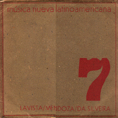